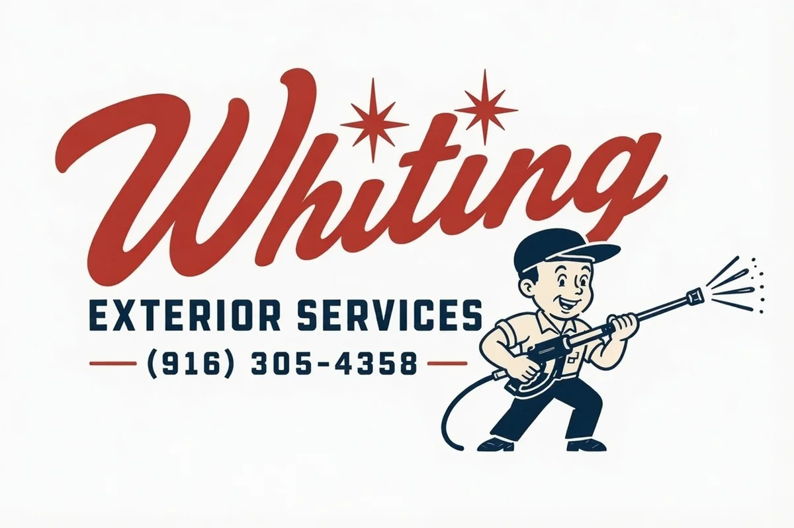

01
Do what we say
Clear promises, dependable arrival, and honest communication.
A local exterior cleaning company focused on excellent work, straightforward communication, and long-term trust.

Whiting Exterior Services was created to give homeowners a better experience with exterior cleaning—one where calls are returned, arrival times matter, property is protected, and the final result lives up to the promise.
We serve Greater Sacramento with modern equipment and surface-specific methods, but the values behind the work are timeless: preparation, honesty, attention to detail, and pride in a job completed correctly.
Owner story placeholder: Replace this paragraph with the founder’s personal background, what inspired the business, and connection to the community.
Our mission is to deliver a level of exterior cleaning and customer care homeowners are genuinely excited to recommend.
Clear promises, dependable arrival, and honest communication.
Thoughtful preparation and respect for every surrounding detail.
The right process matters more than simply adding pressure.
If something is not right, we address it directly.


Tell us what needs attention and get a straightforward quote.